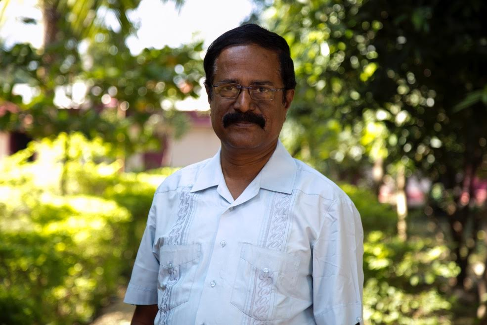

Dear Friends
Warm Greetings!
It is with immense joy, I learn of your interest and keenness to come to the Church on The Rock Theological Seminary (COTRTS).
The seminary has been established to train and send forth well-qualified and Spirit-filled Christian workers to fulfill the Great Commission of Jesus Christ (Matt. 28: 18-20) Since its inception, the Seminary has equipped over 2400 anointed and informed servant leaders who are serving in India and in many countries of the world.
COTRTS’s educational responsibility is clearly seen in the obligation to carry out the teaching task embraced by the Great Commission. The seminary is committed to offer scholastic training for the varied ministries of the church, with the carefully designed curriculum emphasizing; Bible based teaching that is evangelical in theology. COTRTS has a team of highly qualified and committed faculty members with passion for empowering students to reach their maximum potential and so it is known for its academic excellence in education and exercising transformational leadership skills in the field.
The Seminary offers B.Th, M.Div and M.Th (in Church History and Missiology) and begins to offer PhD in Missiology during this academic year. Our academic programs are accredited by the Asia Theological Association (ATA)
COTR Theological Seminary is a family where each live for the other and all live for God. The presence of the faculty and students from various denominational, cultural, ethnic, linguistic backgrounds enrich the community life. The cell groups, cultural and talent nights, sports etc helps the members to celebrate the otherness in the other. The faculty supervised field exposure provides opportunity to translate the academic learning in the filed.
The Child care, Education, Media and Health institutions in the campus provides the comprehensive approach and environment to the training that is the uniqueness of the training context at COTRTS. Academic seminars, mission conferences and lectures, theological debates etc enhance the academic life of the students. The environment also provides opportunities to develop ones skill in music and media communication.
Looking forward to welcoming you to the Church on The Rock Theological Seminary fellowship
In His Mission
Pari Titus
